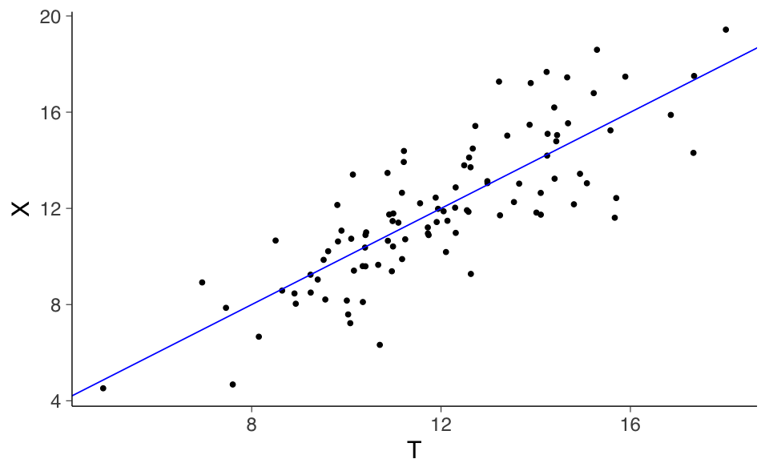
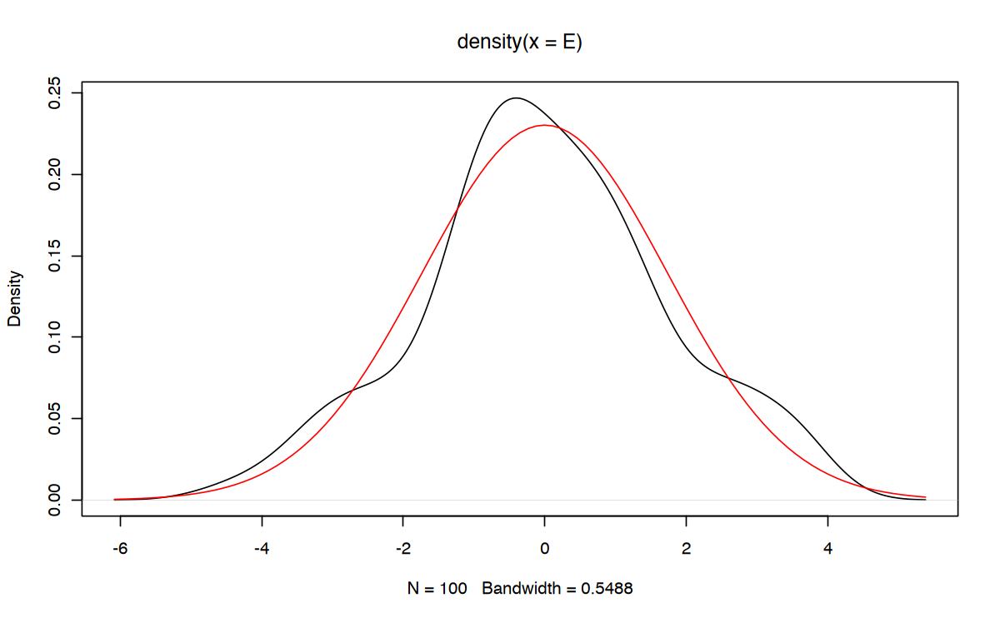

# Carica il file _common.R per impostazioni di pacchetti e opzioni
here::here("code", "_common.R") |> source()
# Carica pacchetti aggiuntivi
pacman::p_load(modelsummary, MASS)8 Fondamenti teorici
Prerequisiti
Leggere il capitolo 3, Reliability, del testo Principles of psychological assessment di Petersen (2024).
Si consiglia di ripassare i concetti fondamentali della teoria delle probabilità, in particolare le proprietà delle variabili aleatorie. Per approfondire, si rimanda al materiale didattico dell’insegnamento di Psicometria disponibile al seguente link.
Concetti e Competenze Chiave
Preparazione del Notebook
8.1 Introduzione
La CTT, originariamente sviluppata da Spearman (1904) e successivamente formalizzata da Lord & Novick (1968), è una teoria utilizzata in psicometria per valutare e misurare le caratteristiche psicologiche degli individui attraverso l’uso di test e questionari. Alla base della CTT c’è l’idea che il punteggio di un individuo in un test rifletta tanto il suo vero livello nella caratteristica misurata quanto un certo grado di errore casuale di misurazione. Questa teoria fornisce un quadro concettuale per comprendere come il punteggio osservato possa differire dal punteggio vero e per analizzare la precisione e l’affidabilità del test stesso. Sebbene siano stati sviluppati approcci più recenti, come la teoria della risposta all’item e la teoria della generalizzabilità, la CTT rimane una componente fondamentale nella psicometria e continua a guidare la costruzione, l’interpretazione e la valutazione dei test psicologici.
Secondo questa teoria, il punteggio ottenuto da un individuo in un test è influenzato da due componenti: il punteggio vero dell’individuo sulla caratteristica misurata e l’errore casuale di misurazione.
Il punteggio vero rappresenta la misura effettiva della caratteristica che si intende valutare nel soggetto. Tuttavia, a causa di vari fattori come l’errore di misurazione, le distrazioni o l’incertezza dell’individuo durante il test, il punteggio osservato può deviare dal punteggio vero. Questa discrepanza tra il punteggio vero e il punteggio osservato viene definita errore di misurazione.
La teoria classica dei test si focalizza sulla quantificazione della relazione tra il punteggio vero, il punteggio osservato e l’errore di misurazione. Attraverso l’uso di statistiche come la media, la deviazione standard e il coefficiente di affidabilità, questa teoria fornisce una base concettuale per la costruzione dei test, l’interpretazione dei risultati e l’analisi dell’affidabilità del test stesso.
8.2 Costrutti
Un costrutto è un concetto, spesso considerato una idea latente o fenomeno non direttamente osservabile (Petersen, 2024). Ad esempio, la depressione può essere un costrutto perché non possiamo misurare direttamente il livello di depressione di una persona, ma lo inferiamo attraverso indicatori indiretti come umore basso, perdita di interesse, difficoltà nel sonno, ecc. Gli indicatori sono misure che riflettono il costrutto.
Esistono due tipi principali di costrutti: costrutti riflessivi e costrutti formativi.
In un costrutto riflessivo, il costrutto causa le misure e gli indicatori riflettono il costrutto (Bollen & Lennox, 1991). Ad esempio, l’estroversione è un costrutto riflessivo perché la risposta agli indicatori come “piacere di parlare con sconosciuti” o “andare a feste” riflette il livello di estroversione della persona. Gli indicatori sono correlati perché riflettono tutti un unico costrutto latente. La consistenza interna tra gli indicatori è quindi attesa.
In un costrutto formativo, invece, le misure causano il costrutto (Bollen & Lennox, 1991). Ad esempio, lo stato socioeconomico (SES) può essere formato dall’educazione, dal reddito e dal prestigio occupazionale di una persona. Gli indicatori formano il costrutto e potrebbero non essere correlati tra loro, in contrasto con i costrutti riflessivi.
Differenze tra costrutti riflessivi e formativi:
Correlazioni tra indicatori: Gli indicatori riflessivi sono correlati, mentre quelli formativi non lo devono necessariamente essere.
Campionamento degli indicatori: Nei costrutti formativi è essenziale campionare tutti gli aspetti del costrutto, mentre nei riflessivi gli indicatori possono essere intercambiabili.
Correlazioni ottimali: Nei costrutti riflessivi, alte correlazioni tra indicatori sono desiderabili, mentre nei formativi correlazioni troppo alte possono creare multicollinearità.
I costrutti riflessivi devono essere stimati con modelli latenti come SEM, analisi fattoriale o teoria della risposta dell’item (IRT). I costrutti formativi possono essere stimati con medie pesate o tramite SEM.
In sintesi, prima di stimare un costrutto, è importante comprendere la sua natura teorica. I costrutti riflessivi richiedono modelli che riflettano la varianza comune tra gli indicatori, mentre i costrutti formativi possono essere stimati con medie o punteggi sommativi. La teoria è essenziale per guidare la scelta del metodo di stima.
8.3 L’Equazione Fondamentale della CTT
La CTT descrive come i punteggi ottenuti da un test psicometrico siano legati a un costrutto latente. Uno dei concetti fondamentali all’interno della CTT riguarda l’affidabilità dei punteggi ottenuti dai test. L’affidabilità, in questo contesto, indica la capacità del test di produrre risultati coerenti e stabili in diverse occasioni. Questo concetto può essere compreso attraverso l’equazione fondamentale della CTT:
\[ X = T + E, \tag{8.1}\]
dove \(X\) rappresenta il punteggio osservato nel test, \(T\) è il punteggio vero (ovvero la rappresentazione della variabile latente di interesse), e \(E\) rappresenta l’errore di misurazione.
Un aspetto di particolare rilevanza all’interno della CTT riguarda la varianza dell’errore. Maggiore è questa varianza, minore sarà la precisione con cui il punteggio vero si riflette nei punteggi osservati. In un contesto ideale, gli errori di misurazione sarebbero tutti nulli, garantendo punteggi esatti per ogni partecipante. Tuttavia, a causa delle inevitabili imperfezioni, si verifica una certa variazione negli errori. La deviazione standard associata a questi errori è chiamata errore standard di misurazione e viene indicata con \(\sigma_E\). Uno degli obiettivi principali della CTT è stimare \(\sigma_E\) al fine di valutare la qualità di una scala psicometrica.
8.3.1 Le due componenti del punteggio osservato
L’Equazione 8.1 rappresenta il cuore del modello, sottolineando che il punteggio osservato è il risultato dell’addizione del punteggio vero e dell’errore di misurazione.
L’obiettivo principale della CTT è quantificare l’errore di misurazione (rappresentato da \(\sigma_E\)) per valutare l’affidabilità del test e ottenere una stima dell’errore standard di misurazione. L’affidabilità del test riflette la precisione con cui il test può misurare il punteggio vero (Coaley, 2014). Si calcola come il rapporto tra la varianza dei punteggi veri e la varianza dei punteggi osservati. Un’alta affidabilità indica una ridotta incertezza dovuta all’errore di misurazione (\(\sigma_E\)), indicando che il punteggio osservato (\(X\)) fornisce una misura accurata del punteggio vero (\(T\)). Al contrario, una bassa affidabilità indica un elevato errore di misurazione (\(\sigma_E\)) e una significativa discrepanza tra il punteggio osservato e il punteggio vero.
La stima dell’errore standard di misurazione comporta il calcolo della deviazione standard della variabile casuale \(E\) (ossia \(\sigma_E\)), che rappresenta l’errore di misurazione influente sui punteggi veri. Questa stima offre un’indicazione della dispersione dei punteggi osservati attorno ai punteggi veri, causata dall’errore di misurazione.
Nelle prossime sezioni, esploreremo come il concetto chiave di attendibilità nella CTT possa essere collegato al coefficiente di determinazione nel contesto del modello statistico di regressione lineare. Inoltre, vedremo come l’errore standard di misurazione della CTT possa essere associato all’errore standard nella regressione.
8.3.2 Il punteggio vero
L’Equazione 8.1 ci spiega che il punteggio osservato è il risultato della combinazione di due componenti: una componente sistematica (il punteggio vero) e una componente aleatoria (l’errore di misurazione). Ma cosa rappresenta esattamente il punteggio vero? La Teoria Classica dei Test (CTT) attribuisce diverse interpretazioni al concetto di punteggio vero.
Da un punto di vista psicologico, la CTT considera il test come una selezione casuale di domande da un insieme più ampio di domande che riflettono il costrutto da misurare (Kline, 2013; Nunnally, 1994). In questo contesto, il punteggio vero rappresenta il punteggio che un partecipante otterrebbe se rispondesse a tutte le domande dell’insieme completo. L’errore di misurazione riflette quindi quanto le domande selezionate rappresentano l’intero insieme di domande relative al costrutto.
In modo equivalente, il punteggio vero può essere considerato come il punteggio non influenzato da fattori esterni al costrutto, come effetti di apprendimento, fatica, memoria, motivazione, e così via. Poiché è concepito come un processo completamente casuale, la componente aleatoria non introduce alcun bias nella tendenza centrale della misurazione (la media di \(E\) è assunta essere uguale a 0).
Dal punto di vista statistico, il punteggio vero è un punteggio inosservabile che rappresenta il valore atteso di infinite misurazioni del punteggio ottenute:
\[ T = \mathbb{E}(X) \equiv \mu_X \equiv \mu_{T}. \]
Combinando le definizioni presentate sopra, Lord & Novick (1968) concepiscono il punteggio vero come la media dei punteggi che un soggetto otterrebbe se il test venisse somministrato ripetutamente nelle stesse condizioni, senza effetti di apprendimento o fatica.
8.3.3 Somministrazioni ripetute
Nella CTT, possiamo distinguere due tipi di esperimenti casuali: uno in cui l’unità di osservazione (l’individuo) è considerata una variabile campionaria, e un altro in cui il punteggio di un singolo individuo è trattato come una variabile casuale. La combinazione di questi due esperimenti consente di estendere i risultati della CTT, originariamente sviluppata assumendo somministrazioni ripetute immaginarie del test allo stesso individuo in condizioni identiche, al caso di una singola somministrazione su un campione di individui (Allen & Yen, 2001).
Questa estensione si fonda sull’assunzione ergodica, secondo cui è possibile interpretare la variabilità nelle misurazioni ripetute su un singolo individuo come rappresentativa della variabilità in un campione di individui, a condizione che siano soddisfatte le seguenti condizioni:
Omogeneità: le proprietà fondamentali del costrutto misurato sono uguali per tutti gli individui nel campione. In altre parole, ogni individuo risponde in modo simile rispetto alla dimensione latente misurata dal test, e le differenze individuali sono esclusivamente dovute alla variabilità casuale o all’errore di misura, non a variazioni sostanziali nel costrutto.
Stabilità: le caratteristiche individuali misurate restano costanti nel tempo durante le somministrazioni ripetute. Ciò significa che, per uno stesso individuo, il costrutto misurato non cambia tra una somministrazione e l’altra, e le variazioni osservate riflettono soltanto la componente di errore o la variabilità casuale.
Quando queste condizioni sono soddisfatte, le quantità fondamentali della CTT assumono un significato empirico valido anche per la somministrazione del test a una popolazione di individui. In questo contesto:
\(\sigma^2_X\) rappresenta la varianza del punteggio osservato nella popolazione,
\(\sigma^2_T\) rappresenta la varianza del punteggio vero nella popolazione,
\(\sigma^2_E\) rappresenta la varianza della componente d’errore nella popolazione.
L’assunzione ergodica permette quindi di inferire proprietà della popolazione a partire da misurazioni su individui singoli e viceversa, in quanto la variabilità all’interno di un individuo e quella tra individui sono considerate comparabili nelle stesse condizioni.
8.3.4 Le assunzioni sul punteggio ottenuto
La CTT assume che la media del punteggio osservato \(X\) sia uguale alla media del punteggio vero,
\[ \mu_X \equiv \mu_{T}, \tag{8.2}\]
in altri termini, assume che il punteggio osservato fornisca una stima statisticamente corretta dell’abilità latente (punteggio vero).
In pratica, il punteggio osservato non sarà mai uguale all’abilità latente, ma corrisponde solo ad uno dei possibili punteggi che il soggetto può ottenere, subordinatamente alla sua abilità latente. L’errore della misura è la differenza tra il punteggio osservato e il punteggio vero:
\[ E \equiv X - T. \]
In base all’assunzione secondo cui il valore atteso dei punteggi è uguale alla media del valore vero, segue che
\[ \mathbb{E}(E) = \mathbb{E}(X - T) = \mathbb{E}(X) - \mathbb{E}(T) = \mu_{T} - \mu_{T} = 0, \]
ovvero, il valore atteso degli errori è uguale a zero.
Per dare un contenuto concreto alle affermazioni precedenti, consideriamo la seguente simulazione svolta in \(\textsf{R}\). In tale simulazione il punteggio vero \(T\) e l’errore \(E\) sono creati in modo tale da soddisfare i vincoli della CTT: \(T\) e \(E\) sono variabili casuali gaussiane tra loro incorrelate. Nella simulazione generiamo 100 coppie di valori \(X\) e \(T\) con i seguenti parametri: \(T \sim \mathcal{N}(\mu_T = 12, \sigma^2_T = 6)\), \(E \sim \mathcal{N}(\mu_E = 0, \sigma^2_T = 3)\):
set.seed(8394)
n <- 100
Sigma <- matrix(c(6, 0, 0, 3), byrow = TRUE, ncol = 2)
mu <- c(12, 0)
dat <- mvrnorm(n, mu, Sigma, empirical = TRUE)
T <- dat[, 1]
E <- dat[, 2]Le istruzioni precedenti (empirical = TRUE) creano un campione di valori nei quali le medie e la matrice di covarianze assumono esattamente i valori richiesti. Possiamo dunque immaginare tale insieme di dati come la “popolazione”.
Secondo la CTT, il punteggio osservato è \(X = T + E\). Simuliamo dunque il punteggio osservato \(X\) come:
X <- T + ELe prime 6 osservazioni così ottenute sono:
tibble(X, T, E) |> head()| X | T | E |
|---|---|---|
| <dbl> | <dbl> | <dbl> |
| 15.70 | 16.77 | -1.067 |
| 13.66 | 12.25 | 1.409 |
| 6.73 | 7.85 | -1.120 |
| 14.62 | 14.23 | 0.388 |
| 10.61 | 10.19 | 0.420 |
| 12.37 | 13.33 | -0.960 |
Un diagramma di dispersione è fornito nella figura seguente:
tibble(X, T) |>
ggplot(aes(T, X)) +
geom_point(position = position_jitter(w = .3, h = .3)) +
geom_abline(col = "blue")
Secondo la CTT, il valore atteso di \(T\) è uguale al valore atteso di \(X\). Verifichiamo questa assunzione nei nostri dati
mean(T) == mean(X)
TRUE
L’errore deve avere media zero:
mean(E)
-8.88178419700125e-17
Le varianze dei punteggi veri, dei punteggi osservati e degli errori sono rispettivamente uguali a:
c(var(T), var(X), var(E)) - 6
- 9
- 3
8.4 L’errore standard della misurazione \(\sigma_E\)
La radice quadrata della varianza degli errori di misurazione, ovvero la deviazione standard degli errori, \(\sigma_E\), è la quantità fondamentale della CTT ed è chiamata errore standard della misurazione. La stima dell’errore standard della misurazione costituisce uno degli obiettivi più importanti della CTT.
Nel caso presente, abbiamo:
sqrt(var(E))
1.73205080756888
Ricordiamo che la deviazione standard indica quanto i dati di una distribuzione si discostano dalla media di quella distribuzione. È simile allo scarto tipico, ovvero la distanza media tra i valori della distribuzione e la loro media. Possiamo dunque utilizzare questa proprietà per descrivere il modo in cui la CTT interpreta la quantità \(\sigma_E\): l’errore standard della misurazione \(\sigma_E\) ci dice qual è, approssimativamente, la quantità attesa di variazione del punteggio osservato, se il test venisse somministrato ripetute volte al medesimo rispondente sotto le stesse condizioni (ovvero, in assenza di effetti di apprendimento o di fatica).
8.5 Assiomi della Teoria Classica
La CTT assume che gli errori siano delle variabili casuali incorrelate tra loro
\[ \rho(E_i, E_k \mid T) = 0, \qquad\text{con}\; i \neq k, \]
e incorrelate con il punteggio vero,
\[ \rho(E, T) = 0, \]
le quali seguono una distribuzione gaussiana con media zero e deviazione standard pari a \(\sigma_E\):
\[ E \sim \mathcal{N}(0, \sigma_E). \]
La quantità \(\sigma_E\) è appunto l’errore standard della misurazione. Sulla base di tali assunzioni la CTT deriva la formula dell’attendibilità di un test. Si noti che le assunzioni della CTT hanno una corrispondenza puntuale con le assunzioni su cui si basa il modello di regressione lineare.
Verifichiamo le assunzioni per i dati dell’esempio.
cor(E, T)
-4.22920527591589e-17
plot(density(E))
curve(dnorm(x, mean(E), sd(E)), add = TRUE, col = "red")
8.6 Quattro Livelli di Misurazione nella CTT
Nell’ambito della CTT, le misure della stessa entità (che possono essere item, sottoscale o test) possono essere classificate in base al loro livello di similarità. In questa sezione, verranno definiti quattro livelli di similarità: misure parallele, \(\tau\)-equivalenti, essenzialmente \(\tau\)-equivalenti e congeneriche.
È importante notare che questi livelli sono gerarchici nel senso che il livello più alto (misure parallele) richiede la maggiore similarità, mentre i livelli inferiori nella gerarchia consentono una minore similarità nelle proprietà del test. Ad esempio, le misure parallele devono avere varianze di vero punteggio uguali, mentre le misure congenetiche non richiedono questa condizione.
Un modo utile per comprendere questi livelli è riflettere sulle relazioni tra i punteggi veri di coppie di misure (Komaroff, 1997). Nella CTT, la relazione tra i punteggi veri su due misure (\(t_i\) e \(t_j\)) è espressa come:
\[ t_i = a_{ij }+ b_{ij} t_{j}. \]
\(a_{ij}\): Rappresenta lo scarto medio tra i punteggi delle due misure. Se è diverso da zero, una misura tende a dare punteggi sistematicamente più alti o più bassi dell’altra.
\(b_{ij}\): Rappresenta la scala con cui una misura misura il tratto latente rispetto all’altra. Se è diverso da uno, le misure non misurano lo stesso tratto con la stessa intensità.
Cosa significano questi parametri per i livelli di similarità?
Misure parallele: Entrambe le misure sono identiche, sia nella scala che nello scarto medio.
Misure τ-equivalenti: Le misure hanno la stessa scala, ma potrebbero avere uno scarto medio diverso.
Misure essenzialmente τ-equivalenti: Le misure possono differire sia nella scala che nello scarto medio, ma entro certi limiti.
Misure congeneriche: Le misure possono differire in modo sostanziale sia nella scala che nello scarto medio.
In sostanza, più i parametri \(a_{ij}\) e \(b_{ij}\) sono vicini a zero e uno, rispettivamente, più le misure sono simili e misurano lo stesso costrutto in modo più coerente.
8.6.1 Misure parallele
Le misure parallele rappresentano il livello più alto di similarità tra le misure. Ciò significa che due misure sono considerate parallele quando soddisfano le seguenti condizioni:
Uguaglianza delle medie dei punteggi veri: Il termine \(a_{ij}\) nell’equazione è uguale a zero per tutte le coppie di misure, indicando che non esiste alcuna differenza sistematica tra le medie dei punteggi veri delle due misure.
Uguaglianza delle varianze dei punteggi veri: Il termine \(b_{ij}\) è uguale a uno per tutte le coppie di misure, indicando che le varianze dei punteggi veri delle due misure sono identiche.
Uguaglianza delle varianze di errore: Le misure parallele presentano la stessa quantità di errore di misura.
Queste condizioni implicano che:
I punteggi osservati (ovvero, i punteggi effettivamente ottenuti dai soggetti) avranno medie, varianze e correlazioni uguali.
Gli item che costituiscono misure parallele hanno lo stesso potere discriminativo (carico fattoriale) rispetto al costrutto che misurano.
In sostanza, le misure parallele misurano esattamente lo stesso costrutto, con la stessa precisione e senza alcuna distorsione sistematica.
Simuliamo i punteggi di due test paralleli in R.
set.seed(2237) # setting the seed ensure reproducibility
num_person <- 1000 # number of respondents
# True scores for Test 1
t1 <- rnorm(num_person, mean = 20, sd = 5)
# Error scores for Test 1
e1 <- rnorm(num_person, mean = 0, sd = 2)
# Observed scores for Test 1
x1 <- t1 + e1
# True scores for Test 2
t2 <- t1 # parallel tests have equal true scores
# Error scores for Test 2
e2 <- rnorm(num_person, mean = 0, sd = 2)
# Observed scores for Test 2
x2 <- t2 + e2# Merge into a data frame
test_df <- data.frame(x1, x2)
# Get means and variances
mv <- datasummary(x1 + x2 ~ Mean + Var,
data = test_df,
output = "data.frame"
)
mv| Mean | Var | |
|---|---|---|
| <chr> | <chr> | <chr> |
| x1 | 20.41 | 29.20 |
| x2 | 20.31 | 30.27 |
cor(test_df$x1, test_df$x2)
0.865310361839848
Nel caso di due test paralleli, le medie e le varianze dei punteggi osservati sono (teoricamente) uguali; la correlazione descrive l’affidabilità del test.
8.6.2 Misure \(\tau\)-equivalenti
Le misure τ-equivalenti rappresentano un livello di similarità leggermente inferiore rispetto alle misure parallele.
Caratteristiche delle misure τ-equivalenti:
Uguaglianza delle varianze dei punteggi veri: Come le misure parallele, anche le misure τ-equivalenti hanno lo stesso valore del punteggio vero per ogni individuo, indipendentemente dal test utilizzato. Ciò implica che il parametro \(b_{ij}\) è sempre uguale a 1.
Possibile differenza nelle varianze di errore: A differenza delle misure parallele, le misure τ-equivalenti possono presentare diversi livelli di errore di misura. Questo significa che, pur misurando lo stesso costrutto, un test potrebbe essere più preciso di un altro.
In sintesi, le misure τ-equivalenti misurano lo stesso costrutto sullo stesso scala, ma possono differire nella precisione con cui lo misurano. In altre parole, i punteggi veri sono uguali per tutti gli item, ma gli errori di misura possono variare.
Conseguenze:
Covarianze uguali: Le misure τ-equivalenti presentano le stesse covarianze tra i punteggi veri e tra i punteggi osservati.
Variazioni nelle varianze osservate: A causa delle possibili differenze nelle varianze di errore, le varianze dei punteggi osservati possono differire tra le misure τ-equivalenti.
Simuliamo due misure \(\tau\)-equivalenti.
set.seed(2237) # setting the seed ensure reproducibility
num_person <- 1000 # number of respondents
# True scores for Test 1
t1 <- rnorm(num_person, mean = 20, sd = 5)
# Error scores for Test 1
e1 <- rnorm(num_person, mean = 0, sd = 2)
# Observed scores for Test 1
x1 <- t1 + e1
# True scores for Test 2
t2 <- t1 # parallel tests have equal true scores
# Error scores for Test 2
e2 <- rnorm(num_person, mean = 0, sd = 2)
# Observed scores for Test 2
x2 <- t2 + e2Se conosciamo i punteggi veri, le stime dell’affidabilità di x1 e x2 sono:
# Reliability for x1
var(t1) / var(x1)
0.878424313030747
# Reliability for x2
var(t2) / var(x2)
0.847351804948915
# Merge into a data frame
test_df <- data.frame(x1, x2)
# Get means and variances
mv <- datasummary(x1 + x2 ~ Mean + Var,
data = test_df,
output = "data.frame"
)
mv| Mean | Var | |
|---|---|---|
| <chr> | <chr> | <chr> |
| x1 | 20.41 | 29.20 |
| x2 | 20.31 | 30.27 |
cor(test_df$x1, test_df$x2)
0.865310361839848
In conclusione, nel caso di due test \(\tau\)-equivalenti, le medie e le varianze dei punteggi osservati sono (teoricamente) uguali. Anche in questo caso, la correlazione descrive l’affidabilità del test.
8.6.3 Misure essenzialmente \(\tau\)-equivalenti
Le misure essenzialmente \(\tau\)-equivalenti rappresentano una forma di misurazione in cui i punteggi veri possono differire di una costante additiva. Ciò significa che, pur misurando lo stesso costrutto, le medie dei punteggi veri di diversi item possono variare leggermente.
Caratteristiche delle misure essenzialmente \(\tau\)-equivalenti:
Uguaglianza delle varianze dei punteggi veri: Come nelle misure \(\tau\)-equivalenti, la varianza del punteggio vero è la stessa per tutti gli item.
Possibili differenze nelle medie dei punteggi veri: Il parametro \(a_{ij}\) può essere diverso da zero, indicando che le medie dei punteggi veri possono variare.
Possibili differenze nelle varianze di errore: Come nelle misure \(\tau\)-equivalenti, gli item possono avere diversi livelli di precisione, ovvero diverse varianze di errore.
Implicazioni:
Correlazione perfetta tra i punteggi veri: Nonostante le differenze nelle medie, i punteggi veri sono perfettamente correlati linearmente.
Covarianze uguali tra i punteggi veri: Le covarianze tra i punteggi veri sono uguali per tutte le coppie di item.
Possibili differenze nelle varianze e nelle covarianze dei punteggi osservati: A causa delle differenze nelle varianze di errore, le varianze e le covarianze dei punteggi osservati possono variare.
In sintesi, le misure essenzialmente \(\tau\)-equivalenti sono utili quando si desidera confrontare diversi item che misurano lo stesso costrutto, ma si ammette la possibilità di piccole differenze sistematiche nelle medie dei punteggi.
# True scores for Test 3
t3 <- 5 + t1 # essentially tau-equivalent tests
# Error scores for Test 3 (larger error SDs)
e3 <- rnorm(num_person, mean = 0, sd = 4)
# Observed scores for Test 2
x3 <- t3 + e3# Merge into a data frame
test_df2 <- data.frame(x1, x3)
# Get means and variances
mv <- datasummary(x1 + x3 ~ Mean + Var,
data = test_df2,
output = "data.frame"
)
mv| Mean | Var | |
|---|---|---|
| <chr> | <chr> | <chr> |
| x1 | 20.41 | 29.20 |
| x3 | 25.41 | 41.50 |
Se conosciamo i punteggi veri, la stima dell’affidabilità di x3 è:
# Reliability for x3
var(t3) / var(x3)
0.618012243898734
In conclusione, nel caso di test essenzialmente \(\tau\)-equivalenti, le medie e le varianze dei punteggi osservati sono diverse; la correlazione non è uguale all’affidabilità.
8.6.4 Misure Congeneriche
Le misure congeneriche rappresentano il livello di similarità più basso tra le diverse tipologie di misure.
Caratteristiche delle misure congeneriche:
Nessuna restrizione: A differenza delle misure parallele, τ-equivalenti ed essenzialmente τ-equivalenti, le misure congeneriche non sono soggette a restrizioni specifiche sui parametri \(a_{ij}\) e \(b_{ij}\). Ciò significa che:
Le medie dei punteggi veri possono differire significativamente.
Le varianze dei punteggi veri possono essere diverse.
Le varianze di errore possono variare notevolmente.
Unidimensionalità: Nonostante queste differenze, si assume che tutte le misure congeneriche misurino lo stesso costrutto latente sottostante.
Implicazioni:
Flessibilità: Le misure congeneriche offrono la massima flessibilità in termini di differenze tra gli item.
Minor comparabilità: A causa delle numerose differenze, confrontare direttamente i punteggi ottenuti con misure congeneriche può essere più complesso.
In sintesi, le misure congeneriche rappresentano un modello molto generale, che consente di includere una vasta gamma di situazioni. Tuttavia, la loro flessibilità comporta una minore comparabilità tra gli item.
# True scores for Test 4
t4 <- 2 + 0.8 * t1
# Error scores for Test 4 (larger error SDs)
e4 <- rnorm(num_person, mean = 0, sd = 3)
# Observed scores for Test 2
x4 <- t4 + e4# Merge into a data frame
test_df3 <- data.frame(x1, x4)
# Get means and variances
mv <- datasummary(x1 + x4 ~ Mean + Var,
data = test_df3,
output = "data.frame"
)
mv| Mean | Var | |
|---|---|---|
| <chr> | <chr> | <chr> |
| x1 | 20.41 | 29.20 |
| x4 | 18.27 | 24.23 |
Se conosciamo i punteggi veri, la stima dell’affidabilità di x4 è:
# Reliability for x4
var(t4) / var(x4)
0.677398252481377
Nel caso di test congenerici, le medie e le varianze dei punteggi osservati sono diverse; la correlazione non è uguale all’affidabilità. Per distinguere test congenerici dai test essenzialmente \(\tau\)-equivalenti sono necessari più di due test.
8.7 Riflessioni Conclusive
Questo capitolo ha offerto una panoramica dei concetti chiave della teoria classica dei test (CTT) e ha introdotto quattro tipi di misure psicometriche. Le misure parallele si distinguono per l’elevata somiglianza nei punteggi veri, garantendo che le varianze siano uguali per tutte le misure. Le misure τ-equivalenti condividono questa equivalenza nelle varianze dei punteggi veri, ma non richiedono una somiglianza così stretta come le misure parallele. Le misure essenzialmente τ-equivalenti tollerano una maggiore variabilità nei punteggi veri, pur mantenendo la coerenza dei risultati. Infine, le misure congeneriche presentano le minori restrizioni tra le quattro tipologie, consentendo differenze sia nelle medie sia nelle varianze dei punteggi veri.
Comprendere le differenze tra queste tipologie di misure è fondamentale per valutare l’affidabilità e la validità di un test e per interpretare in modo accurato i risultati. Nelle prossime sezioni della dispensa, approfondiremo l’applicazione pratica della CTT nello sviluppo e nella valutazione dei test psicometrici. Per un’esplorazione più dettagliata, si rimanda alle letture di riferimento: McDonald (2013) e Lord & Novick (1968).
8.8 Session Info
sessionInfo()R version 4.4.2 (2024-10-31)
Platform: aarch64-apple-darwin20
Running under: macOS Sequoia 15.1
Matrix products: default
BLAS: /Library/Frameworks/R.framework/Versions/4.4-arm64/Resources/lib/libRblas.0.dylib
LAPACK: /Library/Frameworks/R.framework/Versions/4.4-arm64/Resources/lib/libRlapack.dylib; LAPACK version 3.12.0
locale:
[1] C
time zone: Europe/Rome
tzcode source: internal
attached base packages:
[1] stats graphics grDevices utils datasets methods base
other attached packages:
[1] modelsummary_2.2.0 MASS_7.3-61 viridis_0.6.5
[4] viridisLite_0.4.2 ggpubr_0.6.0 ggExtra_0.10.1
[7] gridExtra_2.3 patchwork_1.3.0 bayesplot_1.11.1
[10] semTools_0.5-6 semPlot_1.1.6 lavaan_0.6-19
[13] psych_2.4.6.26 scales_1.3.0 markdown_1.13
[16] knitr_1.49 lubridate_1.9.3 forcats_1.0.0
[19] stringr_1.5.1 dplyr_1.1.4 purrr_1.0.2
[22] readr_2.1.5 tidyr_1.3.1 tibble_3.2.1
[25] ggplot2_3.5.1 tidyverse_2.0.0 here_1.0.1
loaded via a namespace (and not attached):
[1] rstudioapi_0.17.1 jsonlite_1.8.9 magrittr_2.0.3
[4] TH.data_1.1-2 estimability_1.5.1 farver_2.1.2
[7] nloptr_2.1.1 rmarkdown_2.29 vctrs_0.6.5
[10] Cairo_1.6-2 minqa_1.2.8 base64enc_0.1-3
[13] rstatix_0.7.2 htmltools_0.5.8.1 broom_1.0.7
[16] Formula_1.2-5 htmlwidgets_1.6.4 plyr_1.8.9
[19] sandwich_3.1-1 emmeans_1.10.5 zoo_1.8-12
[22] uuid_1.2-1 igraph_2.1.1 mime_0.12
[25] lifecycle_1.0.4 pkgconfig_2.0.3 Matrix_1.7-1
[28] R6_2.5.1 fastmap_1.2.0 shiny_1.9.1
[31] digest_0.6.37 OpenMx_2.21.13 fdrtool_1.2.18
[34] colorspace_2.1-1 rprojroot_2.0.4 Hmisc_5.2-0
[37] labeling_0.4.3 fansi_1.0.6 timechange_0.3.0
[40] abind_1.4-8 compiler_4.4.2 withr_3.0.2
[43] glasso_1.11 htmlTable_2.4.3 backports_1.5.0
[46] carData_3.0-5 ggsignif_0.6.4 corpcor_1.6.10
[49] gtools_3.9.5 tools_4.4.2 pbivnorm_0.6.0
[52] foreign_0.8-87 zip_2.3.1 httpuv_1.6.15
[55] nnet_7.3-19 glue_1.8.0 quadprog_1.5-8
[58] promises_1.3.0 nlme_3.1-166 lisrelToR_0.3
[61] grid_4.4.2 pbdZMQ_0.3-13 checkmate_2.3.2
[64] cluster_2.1.6 reshape2_1.4.4 generics_0.1.3
[67] gtable_0.3.6 tzdb_0.4.0 data.table_1.16.2
[70] hms_1.1.3 car_3.1-3 utf8_1.2.4
[73] tables_0.9.31 sem_3.1-16 pillar_1.9.0
[76] IRdisplay_1.1 rockchalk_1.8.157 later_1.3.2
[79] splines_4.4.2 lattice_0.22-6 survival_3.7-0
[82] kutils_1.73 tidyselect_1.2.1 miniUI_0.1.1.1
[85] pbapply_1.7-2 stats4_4.4.2 xfun_0.49
[88] qgraph_1.9.8 arm_1.14-4 stringi_1.8.4
[91] pacman_0.5.1 boot_1.3-31 evaluate_1.0.1
[94] codetools_0.2-20 mi_1.1 cli_3.6.3
[97] RcppParallel_5.1.9 IRkernel_1.3.2 rpart_4.1.23
[100] xtable_1.8-4 repr_1.1.7 munsell_0.5.1
[103] Rcpp_1.0.13-1 coda_0.19-4.1 png_0.1-8
[106] XML_3.99-0.17 parallel_4.4.2 jpeg_0.1-10
[109] lme4_1.1-35.5 mvtnorm_1.3-2 insight_0.20.5
[112] openxlsx_4.2.7.1 crayon_1.5.3 rlang_1.1.4
[115] multcomp_1.4-26 mnormt_2.1.1